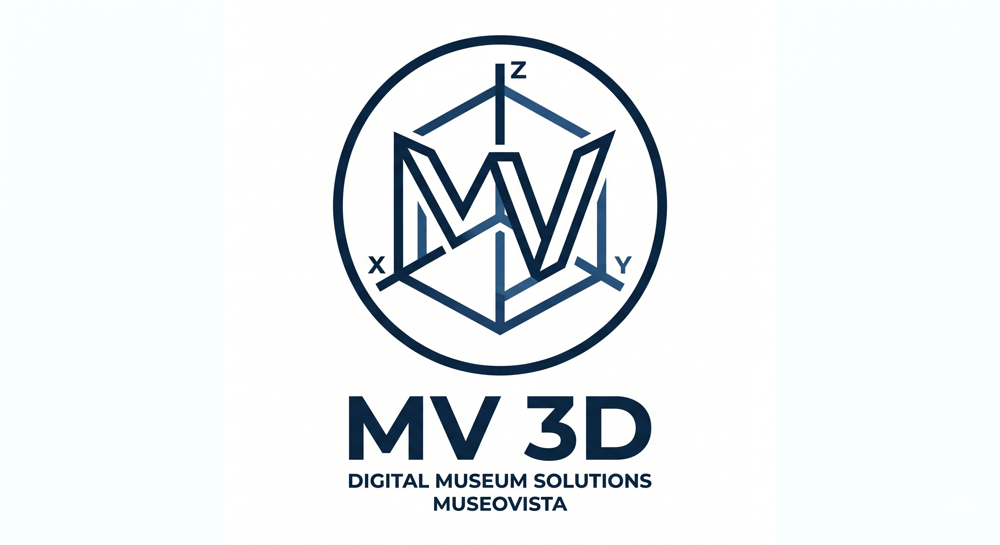

Über uns
Unternehmensname: MuseoVista GmbH
Standort: Wien, Österreich
Mitarbeiteranzahl: 12
Zielgruppe: Museen, Galerien, private Kunstsammlungen und historische Archive.
Geschäftsmodell: Einmalverkauf von Standard-Software. Wir verkaufen eine fertige Software (ein Programm), mit der Museen ihre eigenen 3D-Modelle, Karten und Routen hochladen und verwalten können.
Markenformen und Bedeutung
Unsere 3 Markenformen:
1. Wortmarke
MUSEOVISTA
Bedeutung: Kombination aus "Museo" (Museum) und "Vista" (Aussicht/Ansicht). Steht für den digitalen Ausblick in moderne Museen.
2. Bildmarke (Logo)

Bedeutung: Ein minimalistischer blauer Kreis mit den Initialen MV, der ein stilisiertes 3D-Koordinatensystem darstellt. Symbolisiert die Dreidimensionalität unserer Digitalisierung.
3. Farbmarke (Abstrakte Farbmarke)
Die Farbkombination "Deep Museum Blue & Digital Ice": Eine geschützte Kombination aus den spezifischen Farbwerten #0b2240 (Deep Blue) und #f0f8ff (Alice Blue).
Bedeutung: Das tiefe Dunkelblau symbolisiert die Tradition, Eleganz und Tiefe von Museen und Historie. Das helle, fast kristalline Blau steht für die moderne, saubere und präzise Digitalisierung.
Nizza-Klassen Zuordnung:
- Klasse 9: Software für 3D-Modellierung, digitalisierte Karten und Audio-Guides.
- Klasse 42: IT-Dienstleistungen, Digitalisierung von Kunstwerken, Bereitstellung von Software-as-a-Service (SaaS).
Barrierefreiheit
Unsere Website ist für alle Menschen einfach zu bedienen und entspricht den Richtlinien von WCAG 2.2 AA. Wir nutzen:
- Hoher Kontrast: Die Text- und Hintergrundfarben sind so gewählt, dass alles sehr leicht lesbar ist.
- Skalierbarkeit: Die Schriftgrößen passen sich flexibel an verschiedene Bildschirme an.
- Alternative Textdarstellungen: Alle Bilder, Grafiken und interaktiven Elemente auf unserer Website verfügen über beschreibende Alternativtexte (Alt-Attribute) gemäß den aktuellen WCAG-Richtlinien.